1.프로젝트 마우스 우클릭 - Java EE tools - Generate Deployment Descriptor Stub 클릭
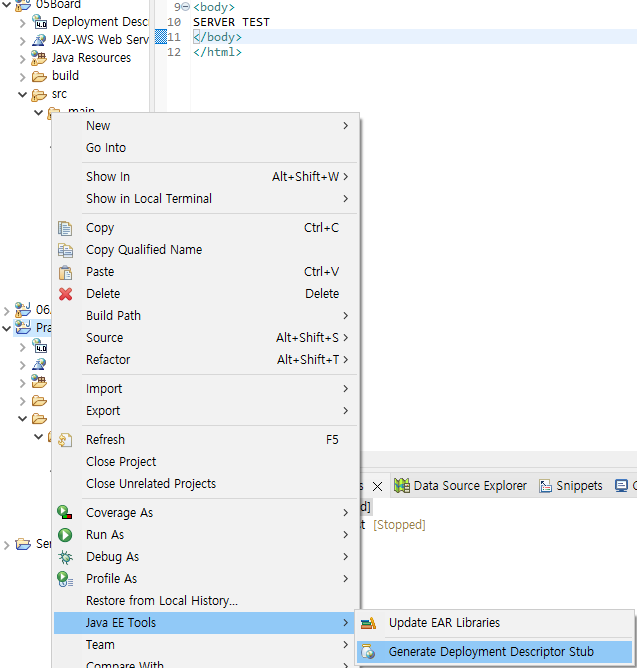
2. MySql 홈페이지에서 받은 JDBC jar 파일(JDBC 전용)과 DBCP를 위한
collections4-4.4.jar , dbcp2-2.9.0.jar파일과 pool2-2.11.1.jar파일을 WEB-INF/lib 폴더안에 넣어줌
MYSQL JDBC 다운로드
*DBCP 파일은 3번 설명에 링크 포함되어 있음*
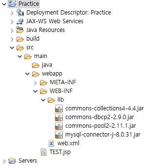
3.기본적으로 구현할 뷰 페이지들을 임시로 만들어줌
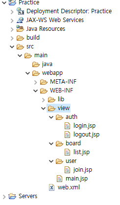
4. WEB-INF에 접근하기 위한 컨트롤러들과 패키지를 만들어줌
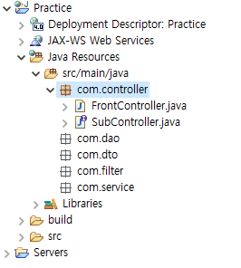
5. FrontController에 HttpServlet을 상속받게 해줌
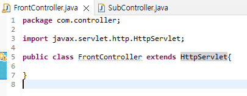
6. FrontController에 Alt+Shift+S키를 눌러 Override/Implement Methods에 들어가서
init(config)와 Service를 만들어줌
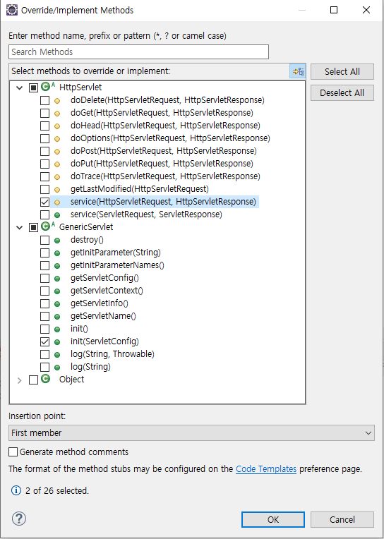
7. 주소로 받을 String과 그걸 작동시킬 SubController를 받는 Map리스트를 만듬
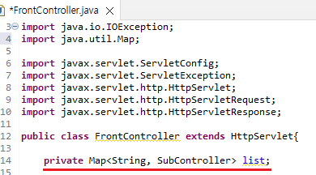
8. Map List에 URI와 서브컨트롤러를 연결시킨다.
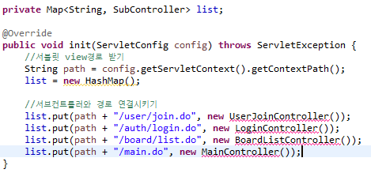
9. Service파트에 SubController가 작동할 수 있게 연결시켜준다
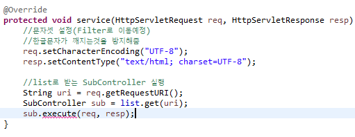
10. SubController에 execute를 만들어준다.
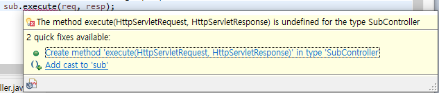
11. 위에서 만들었던 나머지 Controller들도 클래스를 만들어준다
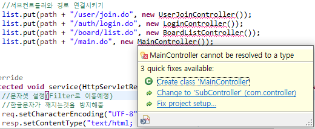
12. 각 컨트롤러마다 해당 URI에 접속시에 접근할 jsp파일을 연결해준다
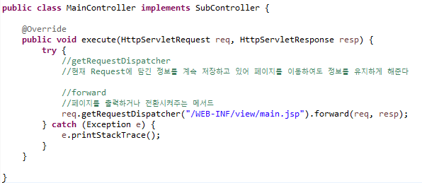
13. WEB-INF의 web.xml 파일을 열어 FrontController의 .do URI들이
FrontController를 거쳐갈 수 있도록 Mapping을 해준다.
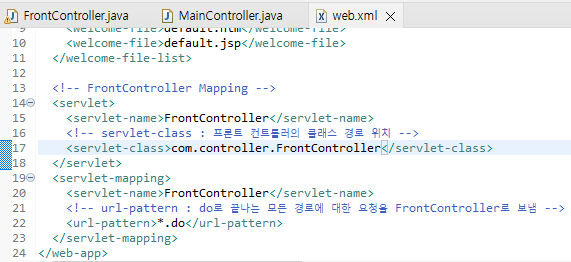
14. FrontController에서 만든 URI경로들이 잘 작동하는지 체크한다
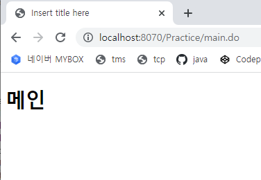